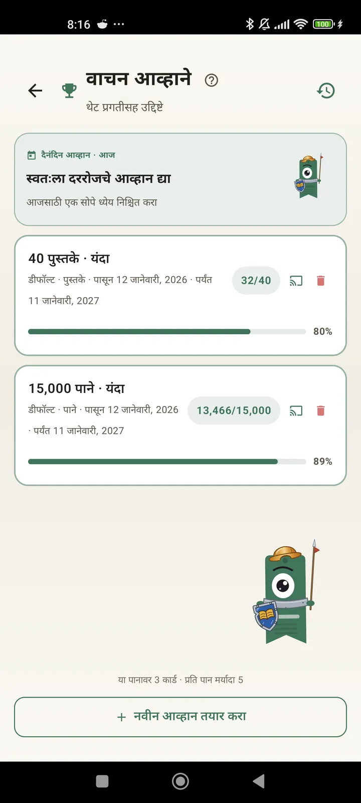

वाचक म्हणून स्वतःला ओळखा
तुमच्या वाचनाचा पुरेपूर फायदा घेण्यासाठी आव्हाने, Bingo, विजेट्स आणि बरेच काही. 3.7 मध्ये नवीन: आव्हाने आणि Bingo विजेट्स.

वाचन आव्हाने
पाने, स्ट्रीक किंवा शैलीनुसार ध्येय ठेवा. मोफत 15 सक्रिय आव्हानांपर्यंत, Pro सह अमर्याद. शिवाय मर्यादेत न मोजले जाणारे, हवे तसे बदलता येणारे दैनिक आव्हान.

दैनिक आव्हान
रोज एक नवे ध्येय. तुमची स्ट्रीक चालू ठेवण्यासाठी मध्यरात्रीपूर्वी आव्हान पूर्ण करा.

वाचन Bingo
दर महिन्याला थीम असलेल्या चौकोनांसह दोन नवे Bingo. ओळी, स्तंभ किंवा संपूर्ण कार्ड पूर्ण करा.

साप्ताहिक सारांश
दर सोमवारी तुमच्या आठवड्याची झलक: वाचलेली पाने, एकूण वेळ, स्ट्रीक आणि मागच्या आठवड्याशी तुलना.

मासिक सारांश
महिना संपला की Lecturameter त्याचा सारांश देते: पाने, वेळ, पूर्ण झालेली पुस्तके, दिवसागणिक तुमचा वेग आणि महिन्याचे तुमचे पुस्तक.

Bingo विजेट Pro
या महिन्याचे Bingo कार्ड, नेहमी डोळ्यासमोर, तुम्ही पूर्ण केलेले चौकोन आणि केलेल्या ओळींसह.

पुस्तक विजेट मोफत
तुम्ही वाचत असलेले पुस्तक थेट होम स्क्रीनवर पहा: मुखपृष्ठ, शीर्षक, लेखक, पाने आणि प्रगतीची टक्केवारी, नेहमी अद्ययावत. हवे तिथे बसवण्यासाठी आकार बदलता येतो.
खरंच भावा, हे ॲप थेरपीसारखे वाटते. दिवसाला दोन-चार पाने वाचण्यापासून मी आता दिवसाला जवळपास 20 पानांवर आलोय आणि सुधारणा चालूच आहेवापरकर्त्याचा अभिप्राय, ईमेलद्वारे आलेला

मासिक तुलना Pro
ॲप न उघडता तुमच्या अलीकडच्या महिन्यांवर एक झटपट नजर. प्रत्येक महिन्याच्या पानांचे स्तंभ आणि चालू महिना ठळक, त्यामुळे या महिन्यात मागच्यापेक्षा चांगले चालले आहे की नाही ते एका नजरेत कळते.

आव्हाने विजेट Pro
तुमची सक्रिय आव्हाने आणि त्यांची प्रगती होम स्क्रीनवर. कोणती दाखवायची ते आव्हाने स्क्रीनवरून निवडा.